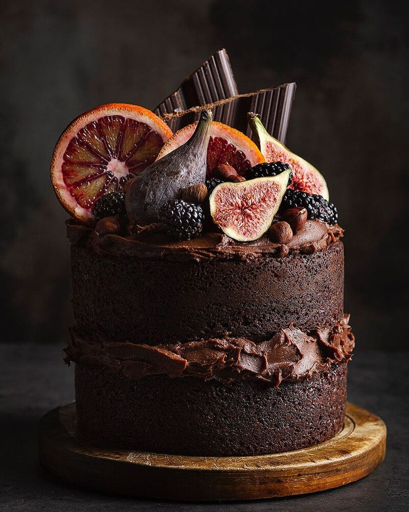

I am sharing you most of my delicious and easy to bake cakes and cookies that your family
members,
friends and kids would enjoy. Here are some of my all time favorites, mouth watering and my most requested
recipes in every occassions.
Chocolate Crinkles: A holiday Favorite
It is also means it's time to make these adorable cookie-friendly favorites:
chocolate crinkels.These chocolate crinkles are a holiday staple in winter, but are great any time of the
year.
Soft,devil's food-like cake-y cookies are rolled around in powdered sugar.
when they bake, the dough rises and the chocolate dough peeks out in the little crinkled fissured beneath the
white sugar.
Easy to Make, Easy to Eat!
Crinkles are easy-peasy to throw together and make a flashy addition
to any cookies platter. A warming though: these cooking are so good and chocolaty they may not make the hot
cocoa craving go away.
In fact, they might just make them worse.
Baking procedure and Ingredients
2 cups all-purpose flour sifted
1/2 cup canola oil
1 1/4 cup granulated sugar
4 pieces eggs
1 tablespoon vanilla extract
5 ounces bitter sweet chocolate chips
1cup unsweetened cocoa powder
1/2 teaspoon salt
2 teasepoons baking powder
1 cup powdered sugar
Instructions
1. Melt chocolate chip using a double boiler or chocolate melter.
2. Combime flour,salt and baking powder in a large bowl. Mix well. Set aside.
3. Combine sugar and cocoa powder in large mixing bowl. Mix all together until well distributed.
Continue mixing while adding oil, vanilla extract, melted chocolate chips, and eggs.
Note: Using a stand mixer with paddle attachment is ideal for this task.
4. Gradually add the flour mixture while mixing. continue the process untill all the ingredients are
well distributed.
Cover the mixing bowl and refrigerate for at least 4 hours.
5. Preheat oven to 350F. Scoop a tablespoon of chocolate of mixture and shape it into a ball using your
hands.
Roll it over the powdered sugar until completely coated. Arrange in a baking tray lined with parchment
paper.
Perform this step until the chocolate mixture is completely consumed.
6. Bake for 10 to 13 minutes.
7. Remove from the oven and let it cool for 10 minutes.
8. Serve. Share and enjoy!
Stunning Fruit and Chocolate Cake
A simple but stunning cake.
A delicious moist chocolate sponge, wrapped in sumptuous
Italian merigue buttercream fristing.
The top is flooded with a glossy chocolate ganache and drip.
Finished with a selection of seasonal fresh fruit.

Baking procedure and Ingredients
CAKE
1 1/2 cups flour (185 grams)
1 cup dutch processed cocoa powder (120 grams)
1 teaspoon salt
1 1/2 teaspoon baking soda
1/2 teaspoon baking powder
1 1/2 cups stout (360ml)
1 tablespoon vanilla extract
1 tablespoon espresso powder
1 cup butter (235 grams)
1 1/2 cups sugar (300 grams)
3 eggs
1/2 cup mayonaise (120 grams)
4 oz dark chocolate (115 grams) chopped
BUTTERCREAM
1 1/2 cup butter (250 grams) softened
1 tablespoon vanilla extract
1/2 cup dutch processed cocoa powder (60 grams)
5 cups powdered sugar (600 grams)
5 tablespoons milk
and lastly, fresh fruit, to decorate
PREPARATION
1. Greace and line three 8 inch (20cm) cake tins with parchment paper
2. In a large bowl, sift together the flour, cocoa powder, salt, baking soda and baking powder. Set
aside
3. In a larg glass measuring cup, combine the stout, vanilla, and espresson powder. Set aside
4. In a large mixing bowl. cream togther the better and sugar until it is light and fluffy, about 5
minutes,
scarping down the sides occasionally to ensure all the ingredients are being evenly creamed together
5. Beat in the eggs, one at a time, ensuring each egg is fully incorporated before adding the next.
6. Add the mayonaise and beat until the mixture is smooth and creamy.
7. Preheat oven to 325F (160 celcius).
8. Alternate adding the prepared dry and wet ingridients to the batter.
Starting with about 1/3 of the dry ingredients, beat until incorporated. Then add 1/3 of the liquid
ingredients, mixing until the batter comes together.
Continue until all the wet and dry infredients have made incorporated.
9. using a rubber scrapper, fold the dark chocolate chunks into the batter.
10. Distribute the batter evenly between the 3 prepsred cake tins.
11. Bake for about 30minutes, or until the toothpick inserted into the center of the cake comes out
clean.
12. Place the cakes on cooling rack and leave to cool for about 10-15minutes, until the outside of
the
pan is cool enough to touch.
13.once the cake have cooled, loosen the edges using a butter knife. Then place a large plate over
the
tin and invert to release the cake from the pan.
remove the parchment paper from the botton of the cake and slide the cake back onto the cooling rack
to
cool completely.
Repeat for the remaining two layers.
14. While your cakes are cooling, prepare the buttercream.
15. In a large bowl, beat together the butter and vanilla.
16. gradually add in the cocoa powder, powdered sugar, milk, continously beating until all the
ingredients have been incorporated and the frostinf is light and fluffy.